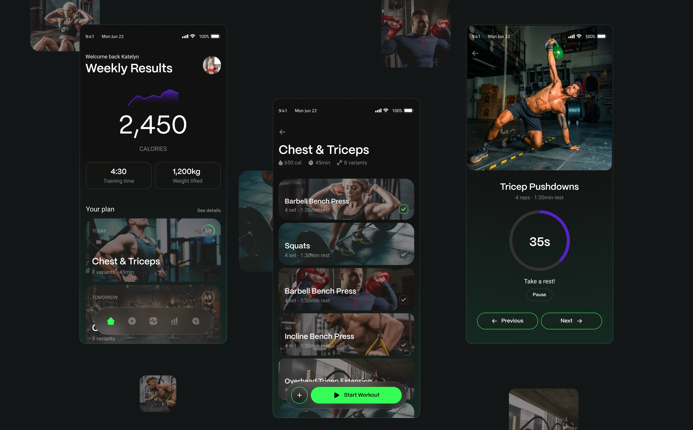
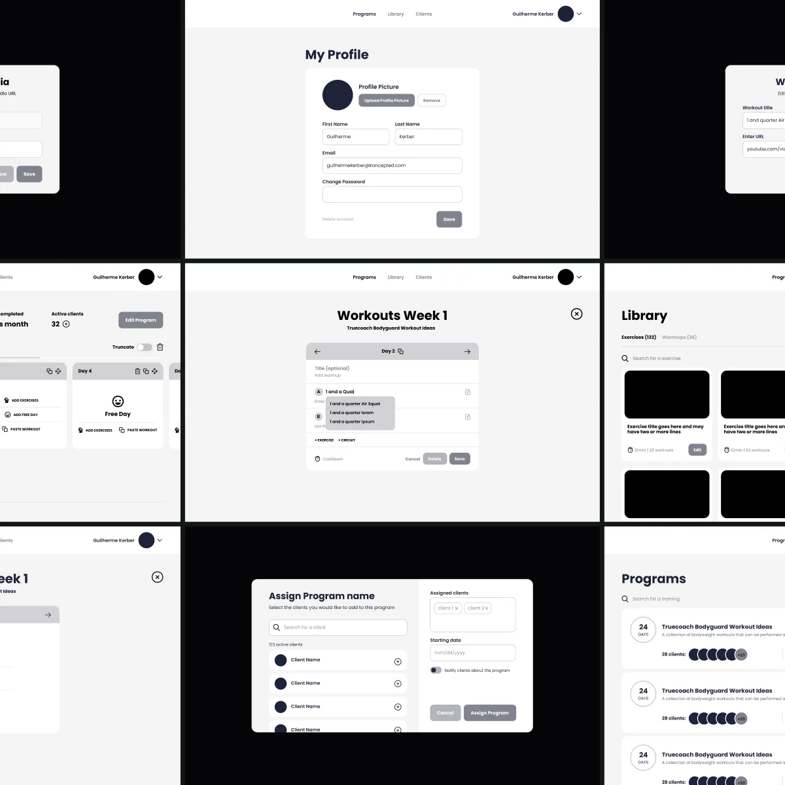
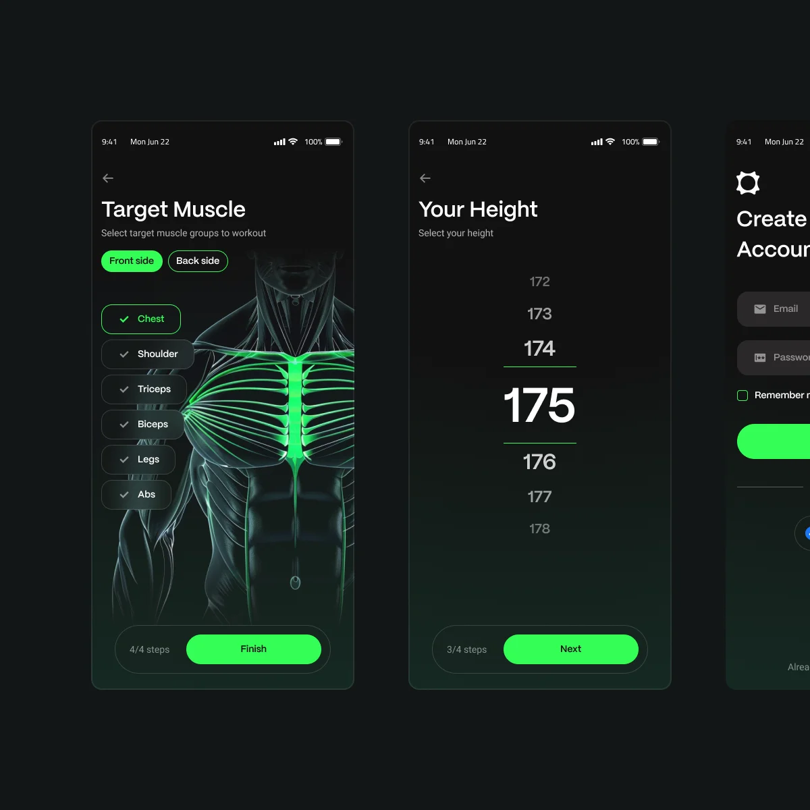
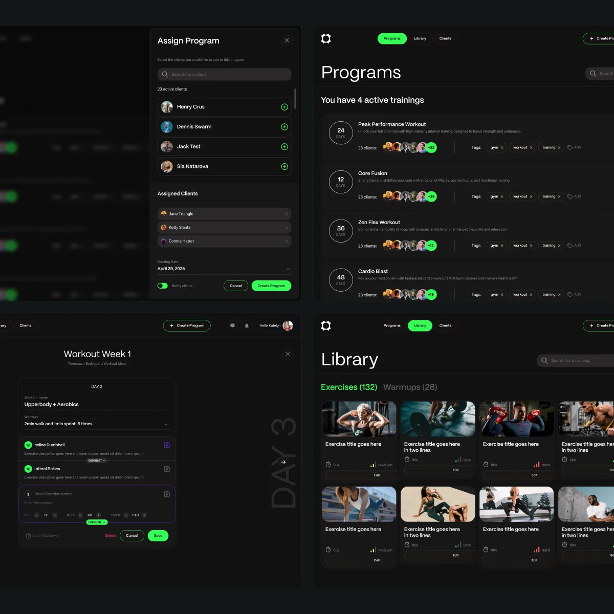
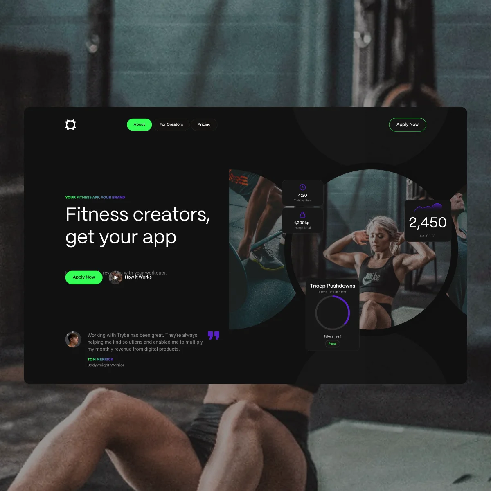
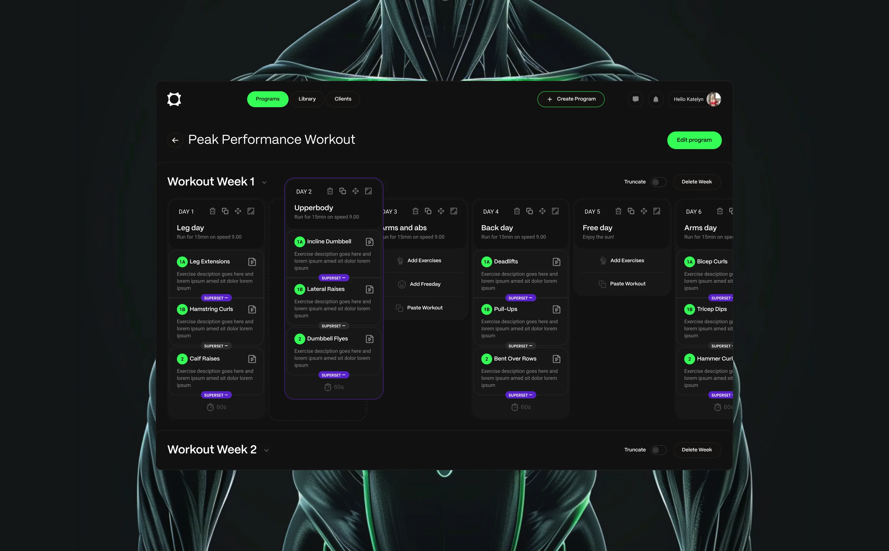
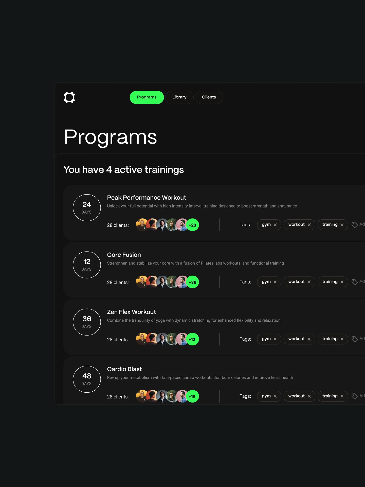
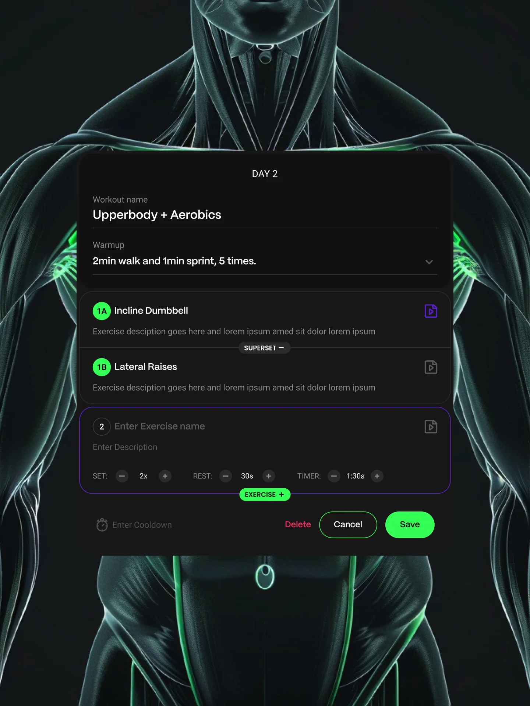

Health · Fitness · 2020–2021
Cross-Platform Coaching Experience
Trybe remote training applications for personal trainers & students.
- Invite-to-active-student conversion
- 40%
- Out of every 100 students invited, 40 sign up and complete at least one workout.
- Adoption among existing students
- 61%
- More than half of an instructor's pre-existing client base begins using remote training.

Challenge
During COVID, personal trainers lost the ability to coach in person, putting both client retention and recurring revenue at risk.
The existing platform supported workout management, but not a complete remote coaching experience. As in-person sessions stopped, trainers began losing students, income, and continuity.

Research
Competitors analysis & opportunities
Most applications by the time were focused on in-person training sessions, so understanding the business opportunity behind the idea of migrating to remote coaching was key.
- Differentiate through simplicity: reduce the effort for a trainer to migrate in-person students and get the first remote workout up and running quickly.
- Design a mobile experience that's especially accessible for beginner students, with less friction between invite, first access, and first completed workout.
- Easily add a "Train at home" variant for each type of exercise, automating some existing workouts and reducing rework.
Apps reviewed: Trainerize, TrueCoach, My PT Hub, and FitSW
Testing
Wireframes and user testing
Once the opportunity areas were clear, wireframes were built in parallel for both sides of the product.
Low-fidelity flows tested with a small group of PTs and students through moderated sessions on clickable prototypes:
- Migration flow: turning an existing in-person session into a train-at-home program
- Day-by-day program builder for PTs
- Student onboarding: invite → account creation → where-you-train setup → first workout




Solution
-
Migration over rework
By allowing personal trainers to feed existing exercises with a Train at home variable, we allowed PTs to quickly convert existing sessions to a ready-to-train training.
Trade-offSpeed over quality. Initial migrated sessions would require further iteration to be optimized for a train-at-home model.
-
Where you train setup
As part of the student onboarding, we had to ask where the remote training would occur. Some people have gyms at their buildings and would prefer to train there over their homes, and these would have better or equivalent equipments.
Trade-offStudents local being personalized ended up creating more complexity when setting up students trainings for PTs.
-
Day by day training setup
Training sessions would be built on weekly day by day batches instead of full monthly cycles. This would simplify the experience of PTs to build new programs and to have clear focus on daily requirements.
Trade-offFocus over long-range visibility. PTs could no longer see or plan a full month of periodization at a glance. Yet, this could be built later via different views.



What's next
Connectivity
As part of the project definition, but left out of the MVP, the next big experience would be to connect personal trainers with their students, to simulate a live experience where students can ask questions, confirm trainings, and rebook sessions directly in app.
What I learned
- Letting PTs reuse existing sessions with a train-at-home flag got the first remote workout shipped fast, without asking trainers to relearn their whole workflow mid-crisis.
- Flexibility has a setup cost. Letting students choose where they train (home vs. building gym) made the product feel personal, but it pushed complexity onto the PT-side setup.
- Weekly cadence lowers the barrier to starting. Day-by-day, week-by-week planning was easier for PTs to adopt than full monthly cycles, especially for trainers migrating under pressure.